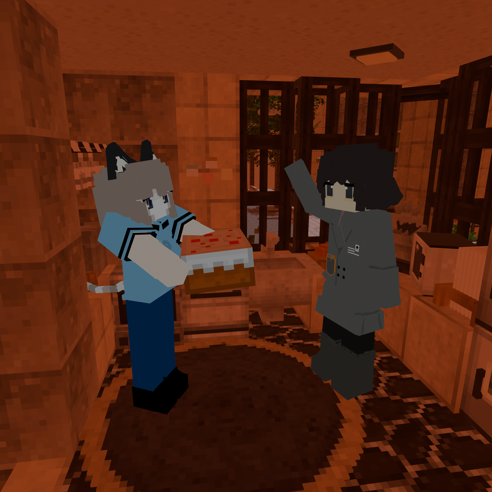

来庆祝一下hahahotsoup的生日吧

下面是附文
“欲买桂花同载酒，终不似，少年游”
这句诗的后劲真的很大，无论在什么时候去读
如果回到义务教育那会，在我还是个没心没肺的小出生的时候，我确实愿意拿着一台老电脑，和同学们打开一个纯净mc生存房间互相搞抽象（玩了五年mc甚至连基本流程都不知道），亦或者阅读着csdn或者各种技术博客消磨一个下午（以前玩破解游戏的时候总会有奇奇怪怪的报错，我也学会了去查错误代码）
以前的b站也很有意思，总在不知不觉中，一天的时间都过去了
夕阳照在我的桌旁，格外的暖
我怀念那段热闹的充满趣味与未知的时光
可我现在有了更好的电脑，入了正版游戏，却发现自己已经找不到那段时间的乐趣了
当个好人可能还不如当个屌丝，就像以前的小米真的就是为了发烧而生（老米粉了，从幼儿园就是），可现在却总是想着混入高端
很多次我坐在屏幕面前不知所措，我找不回来玩游戏的那种快乐了。当年的那些一起玩mc的人，网友们近乎杳无音讯，同学也是渐渐因为学校不同渐渐疏远了
每个人在不同的时期都会改变自己的交际圈，很正常
就算我刷到了你的动态，看到你和朋友们玩得很开心，我也会为你感到高兴
暑假过去了四分之一，但我近乎没和什么人说过话
连出过家门的次数都是屈指可数
逛商场的那种新奇感，在什么时候消失了呢
亦或者说，我什么时候开始对自己的生活开始失去信心
以前的我从未想过自己能瘦下几十斤，也没想过考上高中，只觉得生活处处是乐趣
做饭，打扮，或者是捣鼓东西，都很有意思
可现在的我却是手足无措，尽管有了未曾敢想的条件
我唯一保持不变的，便是我这个垃圾文笔与字体
写文章还是像小学生一样呢 何尝不是一种返老还童与不忘初心
可生活还得继续嘛
不知何时，我对“朋友”这个词的定义与标准越来越严格，从玩乐伙伴到心灵伴侣，这个词的范围开始越来越狭窄
我似乎对生活要求太严格了
因为过于害怕失去，就得死死拽住
但正因如此，愿意出现在我的生活的人开始变少，甚至很多适合只是萍水相蓬罢了
混了网络这么久，现实世界的社交技巧我近乎没有，网络世界的圈子与术语我也已经看不懂了
擅长的领域也很冷门，真正有共同语言且愿意搭话的人少也正常
我也不晓得写这篇文章是什么目的，是哭诉，是纪念以前的简中互联网，是怀念自己的过去与感慨现在，是搞抽象
算了
照应一下题目，纪念一下曾经的小出生